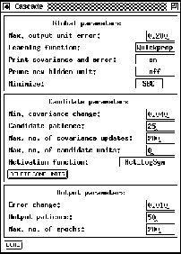
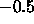

Next: Time Delay Networks
Up: The Cascade Correlation
Previous: Mathematical Background
Networks that make use of the cascade correlation architecture can be
created in SNNS in the same way as all other network types. The
control of the training phase, however, is moved from the control panel
to the special cascade window described below. The control panel is
still used to specify the learning parameters, while the text field
CYCLE does not specify as usual the number of learning
cycles. This field is used here to specify the maximal number of
hidden units to be generated during the learning phase. The number of
learning cycles is entered in the cascade window. The learning
parameters for the embedded learning functions Quickprop, Rprop and
Backprop are described in chapter  .
.
If the topology of a net is specified correctly, the program will
automatically order the units and layers from left to right in the
following way: input layer, hidden layer, output layer, and a
candidate layer.  The hidden layer is generated with 5 units always
having the same x-coordinate (i.e. above each other on the display).
The hidden layer is generated with 5 units always
having the same x-coordinate (i.e. above each other on the display).
The cascade correlation control panel and the cascade window (see
fig. ), is opened by clicking the button in the manager panel. The cascade window is needed
to set the parameters of the learning algorithms CC and RCC. To start
Cascade Correlation, learning function CC, update function
CC_Order and init function CC_Weights in the corresponding
menus have to be selected. Recurrent Cascade-Correlation is started in
the same way, only that this time the functions RCC, RCC_Update
and RCC_Weights have to be selected. If one of these functions
is left out, a confirmer window with an error message pops up and
learning does not start. The init functions of cascade differ from the
normal init functions: upon initialization of a cascade net all hidden
units are deleted.

Figure: The cascade window
The cascade window has the following text fields, buttons and menus:
- Global parameters:
- Max. output unit error:
This value is used as abort condition for the learning algorithms
CC and RCC. If the error of every single output unit is smaller
than the given value learning will be terminated.
- Learning function:
Here, the learning function used to maximize the covariance or
to minimize the net error can be selected from a pull down menu.
Available learning functions are: Quickprop, Rprop and
Backprop
- Print covariance and error:
If this menu item shows on, the development of the error and
and the covariance of every candidate unit is printed. off
prevents all outputs of the net.
- Prune new hidden unit:
This enables
``Pruned-Cascade-Correlation''. It defaults to off, which
means do not remove any weights from the new inserted hidden
unit.
- Minimize:
The selection criterion according to which
PCC tries to minimize. The default selection criterion is the
``Schwarz's Bayesian criterion'', other criteria available are
``Akaikes information criterion'' and the ``conservative mean
square error of prediction''. This option is ignored, unless
PCC is enabled.
- Candidate Parameters:
- Min. covariance change:
The covariance must change by at least this fraction of its old
value to count as a significant change. If this fraction is not
reached, learning is halted and the candidate unit with the maximum
covariance is changed into a hidden unit.
- Candidate patience:
After this number of steps the program tests whether there is
a significant change of the covariance. The change is said to be
significant if it is larger than the fraction given by
Min. covariance change.
- Max. no. of covariance updates:
The maximum number of steps to calculate the covariance. After reaching
this number, the candidate unit with the maximum covariance is changed
to a hidden unit.
- Max. no. of candidate units:
The maximum number of candidate units trained at once.
- Activation function:
This menu item makes it possible to choose between different activation
functions for the candidate units. The functions are: Act_Logistic
Act_LogSym, Act_Tanh, Act_Identity and Random.
Random is not a real activation function. It randomly assigns
one of the other activation functions to each candidate unit.
The function Act_LogSym is identical to Act_Logistic,
except that it is shifted by 
along the y-axis.
- Output Parameters:
- Error change:
analogous to Min. covariance change
- Output patience:
analogous to Candidate patience
- Max. no. of epochs:
analogous to Max. no. of covariance updates
The button deletes all candidate units.
In SNNS the candidate units are realized as special units.
Next: Time Delay Networks
Up: The Cascade Correlation
Previous: Mathematical Background
Niels.Mache@informatik.uni-stuttgart.de
Tue Nov 28 10:30:44 MET 1995